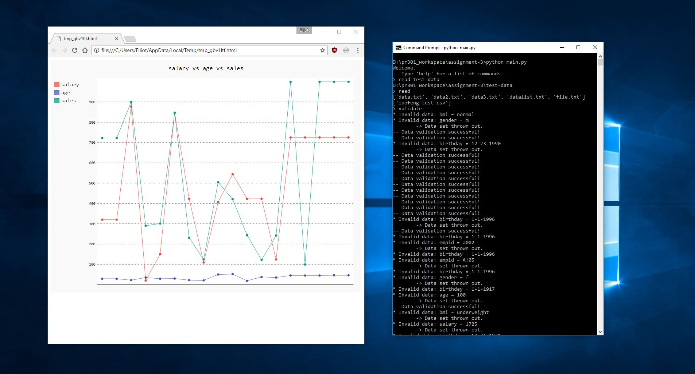
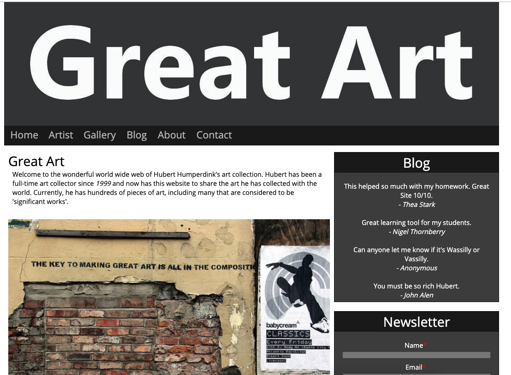
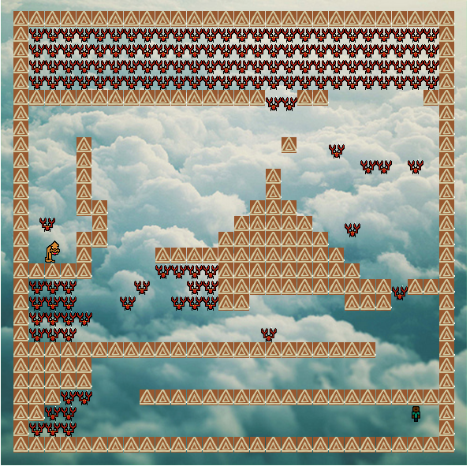

Theseus and Minotaur
Theseus and Minotaur on Android. Implements MVVM
Links: Github
Command-Line Interpreter
Command Line Interpreter that reads and validates data, can store it in an SQLlite database, and display as various charts and graphs. Interpreter refactored using common techniques. Interpreter refactored using GOF Design Patterns.
Links: Github
Responsive Website
Great Art website showcasing HTML and CSS.
Animated Scene
An Animated Scene using JavaScript to manipulate the HTML canvas display.
Live Chat
Live Chat using PHP using REST web service, SQL, JavaScript with AJAX. Has Internationalisation support for a limited number of select languages.
Links: Github
Sokoban
Introduction to MVC and more Object-Oriented concepts like SOLID. Our major project was a version of Sokoban using WinForms.
Links: Github
2D Puzzle Game
A 2D puzzle game with a Maori theme. Control a Warrior to push a Tiki around the level and deliver it to the Fish.
Cloud
this si tkdsjfklasjdklfjksdnf
links